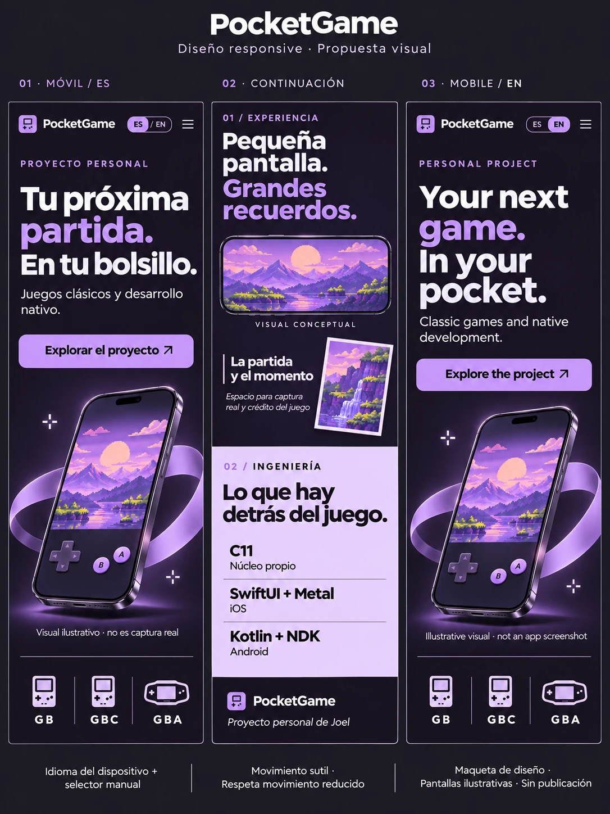
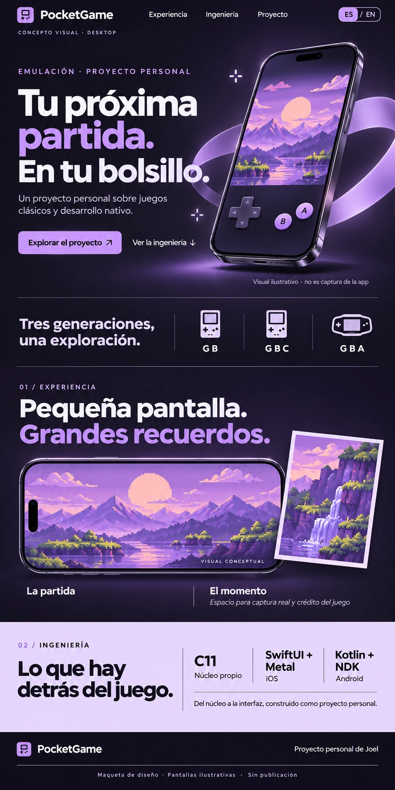

Biblioteca local
Carpetas elegidas en el dispositivo, búsqueda, filtros y favoritos. Los juegos se gestionan como archivos propios.
Un proyecto personal de emulación de Game Boy, Game Boy Color y Game Boy Advance, con núcleos propios e interfaces nativas.
Un proyecto de Joel Bermudez Acosta

La emulación es solo una parte. El proyecto también explora cómo organizar la biblioteca, adaptar los controles y conservar el progreso.

Carpetas elegidas en el dispositivo, búsqueda, filtros y favoritos. Los juegos se gestionan como archivos propios.
Entrada táctil y mandos físicos, con una interfaz desarrollada para cada plataforma.
Guardado atómico, copias de seguridad y estados. El intercambio entre equipos es manual, mediante archivos .pgbm.
Dos núcleos en C11. Dos interfaces nativas. Una separación clara entre emular el hardware y relacionarse con el sistema operativo.
Swift · C ABI
NDK · JNI · SurfaceView
Núcleos propios
CPU, memoria, vídeo y audio viven en los núcleos. Las apps conectan entrada, archivos, sonido y renderizado.
C11 sin E/S, sin estado global mutable y sin reservas de memoria por frame. La sesión controla el ciclo de emulación.
Las apps no usan red. Compartir una partida utiliza archivos y las herramientas del sistema, sin sincronización automática propia.
Compatibilidad descrita a partir del código y la configuración de esta copia. Los mínimos de sistema no certifican el funcionamiento de cada juego o dispositivo.
iOS 26+
Mínimo configurado
GB · GBC · GBA
Núcleos integrados en el código
Android 8.0+
API 26
GB · GBC · GBA
Núcleos integrados en el código
Los mínimos indicados corresponden a la configuración del proyecto. La compatibilidad y el rendimiento dependen del juego y el dispositivo.
No incluye cable link GBA, sensores, e-Reader ni Wireless Adapter. La emulación de BIOS en alto nivel y algunas aproximaciones de tiempos pueden afectar a determinados juegos.
El target de Apple está configurado para iPhone, no para iPad. El port de TV no forma parte de este repositorio. No se anuncian descargas ni disponibilidad en tiendas.
Las imágenes marcadas como conceptuales son ilustraciones. Esta revisión verifica la web; no vuelve a ejecutar las pruebas de las apps ni valida dispositivos físicos. No hay una lista de juegos verificados.
PocketGame es una exploración personal de emulación, desarrollo nativo y trabajo asistido por IA. Este espacio muestra las decisiones, el alcance y los límites del proyecto.